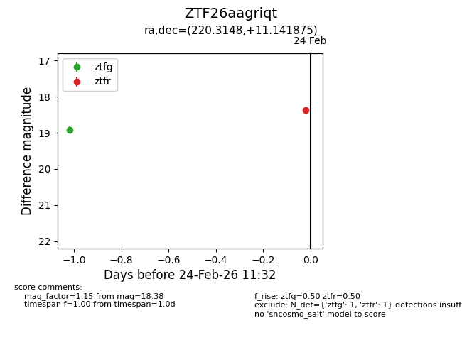
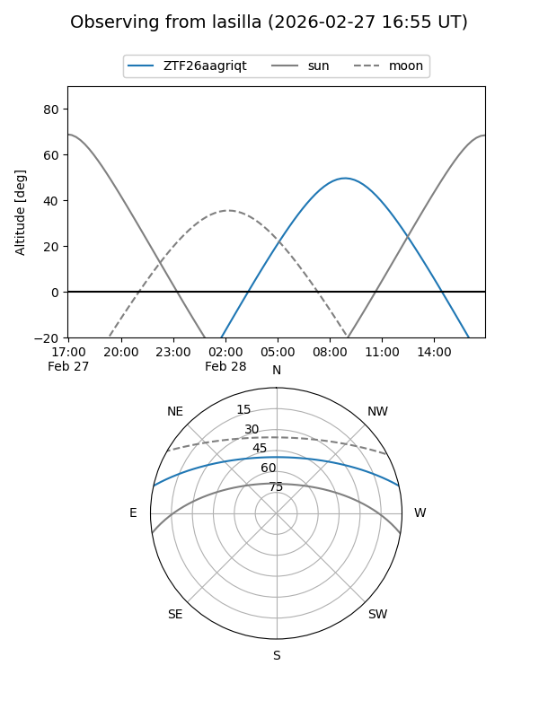
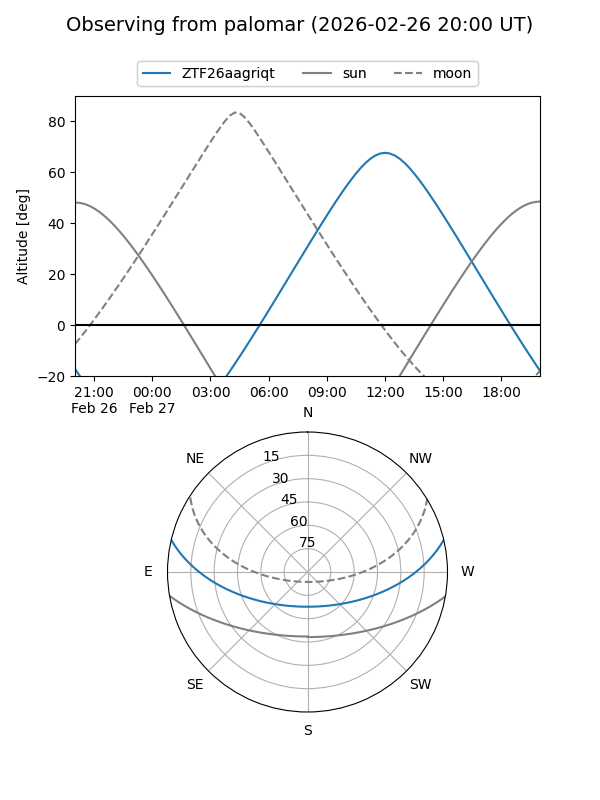
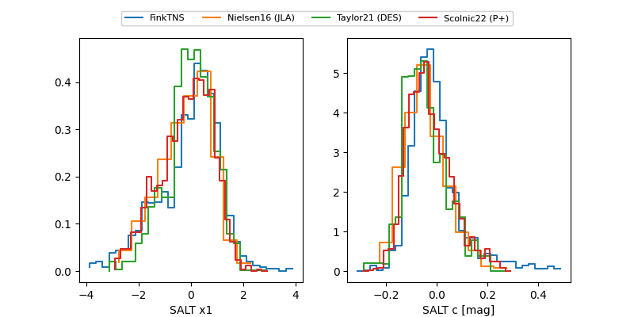

ZTF26aagriqt
Target ZTF26aagriqt at 2026-02-24 11:33
Aliases and brokers:
FINK: link
Lasair: link
ALeRCE: link
alt names
ZTF26aagriqt (ztf,fink_ztf)
Coordinates:
equatorial (ra, dec) = 220.3148,+11.14187
equatorial (HMS+DMS) = 14:41:15.55,+11:08:30.75
galactic (l, b) = (6.4849,+59.65261)
Flags:
Photometry:
last ztfg=18.91, ztfr=18.38
1 ztfg, 1 ztfr detections
Lightcurve

Visibility


Additional plots
